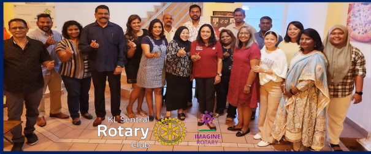

KJ Worldwide Services

In Collaboration with Rotary Club KL Sentral
In Collaboration with Rotary Club KL Sentral
KJ WORLDWIDE SERVICES was established as a result of the combination of sewing experts who have decades of years of experience in the sewing industry. KJ WORLDWIDE SERVICES expertise is in the field of sewing coats, blazers, convo robes, imam robes, corporate shirts, uniformed clothes, baju melayu, and baju kurung. KJ WORLDWIDE SERVICES was officially established on 07 September 2017 with registration no SA0438863-H and is a sole ownership business. The business is currently operating in I-02-01, Jalan PPK 2, Pusat Perniagaan Kinrara, Taman Kinrara Seksyen 3, 47100 Puchong Selangor, and C-02-05, Jalan PPK 1, Pusat Perniagaan Kinrara, Taman Kinrara Seksyen 3, 47100 Puchong Selangor. KJ WORLDWIDE SERVICES operates as a sewing service company of various types of clothing, embroidery, printing, and being a clothing supplier.
Our mission is to Our mission to always be committed in carrying out our expertise at the level that best and effective all the time and ensure that it gives the effect/impact maximum to each customer
The main vision of KJ WORLDWIDE SERVICES company will continue to strive to perform tasks better and more efficient in addition to being able to provide profit to the company. To be a committed, effective, and viable company in this service. Ensure construction work is done according to the standards that have been set. become an expert and competent tailor in the sewing field and giving a comprehensive specific focus by creating a quality and satisfying service network and being able to provide job opportunities.
Charter President: RTN Angelina Arokiasamy
Club Secretary: RTN Celina
Club Treasurer: RTN Sherena
Public Image: RTN Anthony Row
Membership Director: RTN Roza
Service Projects Director: RTN Vicky
Youth Service Director: RTN Pre